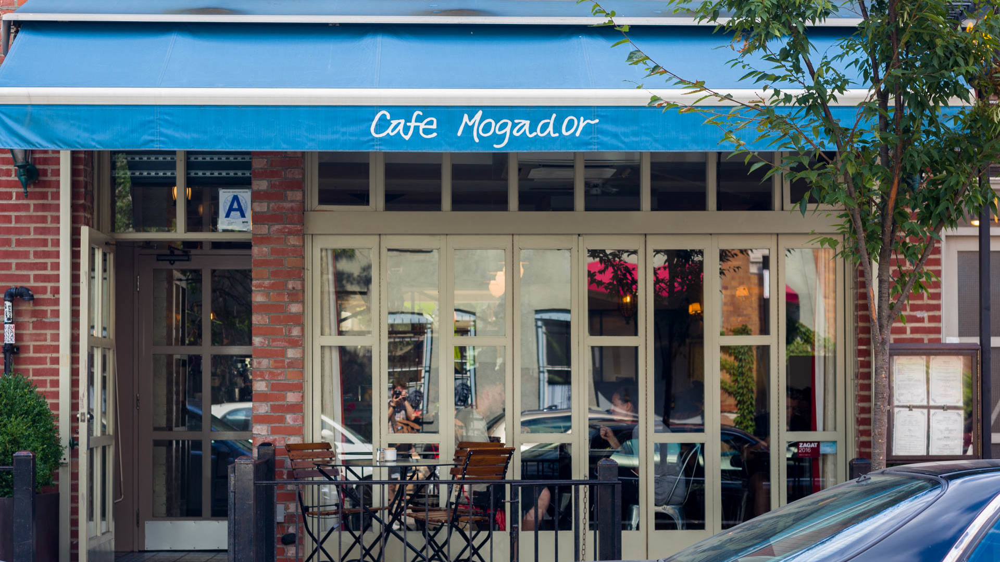
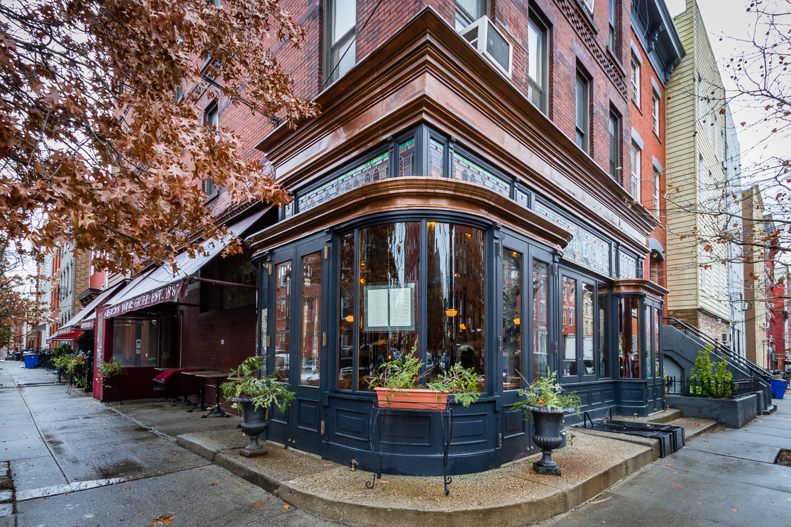

Oregano is one of my favorite Italian restaurants. They have amazing thin crust pizza and pasta. I also recommend their portabella mushrooms and eggplant parmesan!

Come to Cafe Mogador for some exquisite Moroccan food! This place gets pretty crowded but is definitely worth the wait. I highly recommend their mixed grill, couscous, and tagine!
Fushimi is one of my favorite sushi places. They have a wide variety of amazing rolls with many unique choices. The interior is very spacious with great ambiance. Also save some room for their fried ice cream!!
Sweetwater is a great brunch spot! They have the best eggs benedict and french toast.

Teddy's is a great neighborhood spot with amazing burgers and curly fries! Their mac and cheese is also phenomenal!